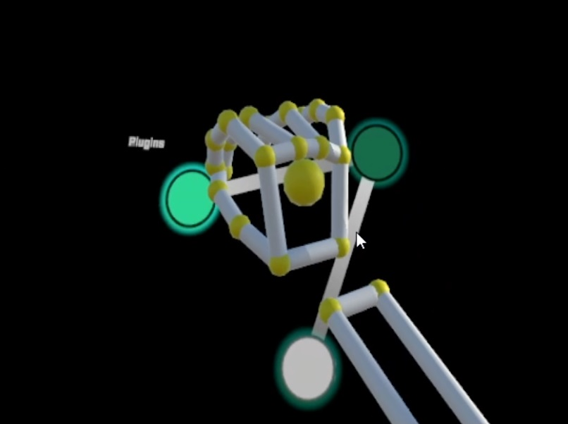
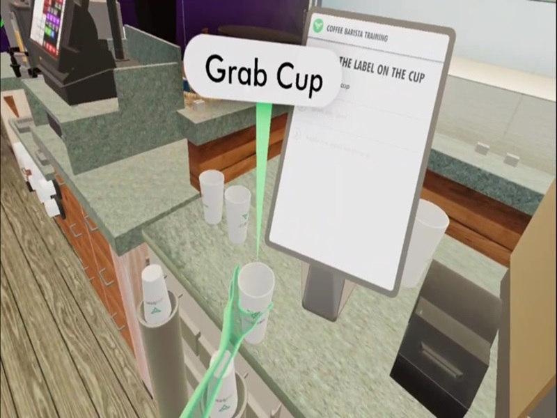
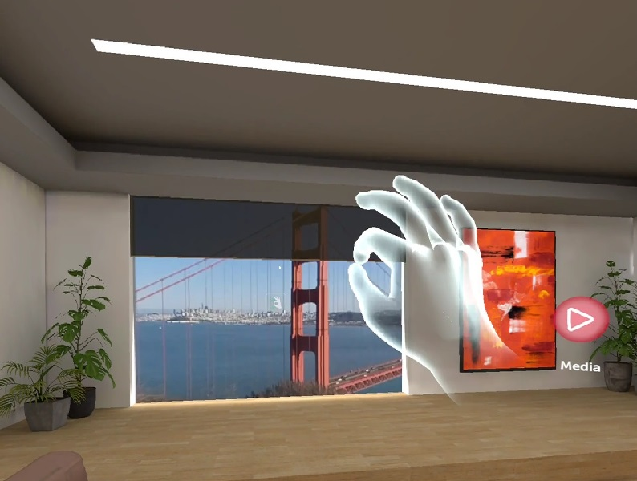

Principal Engineer /
Head of US customer applications team
Ultraleap
Overview
Lead the Customer Applications Team as Head of the US Division, overseeing technical aspects of customer engagements, from headset integration to supporting ISV experiences. Acted as the primary technical contact for all customer meetings in the US, ranging from trade shows to on-site customer support meetings. Conducted workshops and technical training sessions with customers, and at company-sponsored public hackathons.
Research and Development

Key Accomplishments:
- Led efforts in adapting the Ultraleap tracking software to work on numerous XR2 based headsets including the Pico Neo 3, HTC Focus 3, Digilens Argo and Lenovo VRX. Developed Android versions of Ultraleap’s flagship demos to run on these new devices, which were showcased at numerous tradeshows between 2021 and 2024.
- Developed a technical showcase of low-latency hand tracking streaming in CloudXR, enabling highly immersive interactable content on lightweight wireless headsets, which was presented at GTC 2022 and customized for high-profile customers in the immersive entertainment sector.
Customer Enablement

Key Accomplishments:
- Expanded the hand tracking software market by working directly with customers to help them learn how to convert existing controller-based experiences to hands-free experiences by utilizing Ultraleap’s Hand Tracking Technology. Often worked directly alongside customers on their codebase or with their design team to teach them best practices in developing hand tracking experiences.
- Cultivated strategic partnership with Epic Games by leading monthly meetings and internal tooling development, resulting in a public plugin for Ultraleap's hand tracking technology in the Unreal Engine, enhancing support for key customers.
Business Development

Key Accomplishments:
- Showcased the immersive power of hand tracking and mid-air haptics in VR experiences by developing numerous flagship multiplayer VR demos. Used by hundreds of participants at trade shows like CES, IAAPA and AWE from 2018 to 2024.
- Demonstrated how eye and hand tracking can seamlessly work together as part of a flagship demo for CES 2024. Was demonstrated during CES 2024 to numerous hardware partners and was pivotal in securing next steps towards direct hardware integrations of Ultraleap technology.